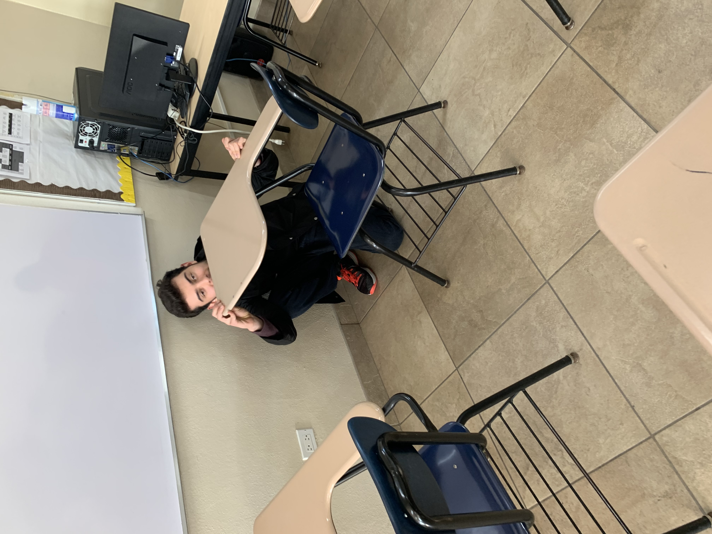
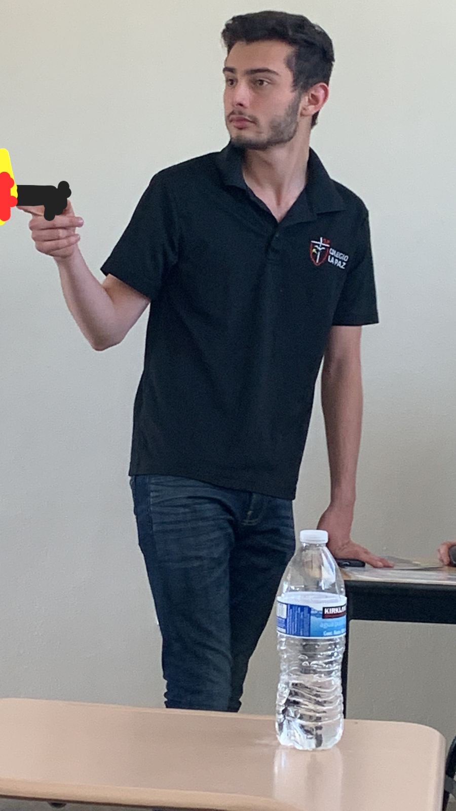

Aldo Sebastian Garcia
AKA: Sebiche
Edad: 18
Rango: Top Global
Nivel de Poder: 10,000,000,000
Sebastián, reconocido por su deslumbrante genialidad en el ámbito de las matemáticas, se sumerge con frecuencia en el vasto océano de sus pensamientos teóricos. Se erige como una verdadera enciclopedia viviente: solicita su consejo y él te obsequiará una solución con una confianza inquebrantable. Además, su entusiasmo desbordante lo impulsa a compartir datos fascinantes, incluso cuando no son requeridos por nadie en particular. Aunque pueda manifestar una leve reserva, su pasión por los desafiantes juegos, como los de la renombrada serie Souls, y su devoción por los automóviles lo convierten en una persona sumamente intrigante y digna de conocer.
Sebas, uno de los miembros más recientes en sumarse a la trama, inicialmente carecía de conocimiento acerca del pasado de sus compañeros. Sin embargo, ha logrado adaptarse con notable celeridad y equiparar su nivel intelectual al del resto del grupo, gracias a su extraordinaria capacidad de adaptación y su incansable dedicación. Aunque se rumorea sobre una posible merma en su coeficiente intelectual a lo largo de la temporada, muchos confían en que pronto desplegará su máximo potencial en las próximas ediciones. Todo reposa en él y en su inquebrantable determinación para superar la procrastinación. Con su compromiso inquebrantable, el equipo podría fácilmente alzarse como el dominante indiscutible de la década, sellando así una temporada invicta en la liga
¡Por los cielos y las estrellas, un relato se despliega ante nuestros ojos, narrando las proezas de Sebastián, nacido en la metrópolis de la Ciudad de México, quien se encuentra maravillado por los encantos del primer mundo! Mas lo que más admira de él, es su habilidad portentosa para doblegarse ante cualquier adversidad que el destino le depara. Un ser de índole flexible, especialmente cuando se le plantean enigmas matemáticos y dilemas físicos. ¡Oh, mas noble caballero! Él, abanderado en contra de la tiranía de Ángel, quien ha sometido al 602 durante dos largas estaciones. Sebastián, ungido con el cometido de derribar tal imperio opresor y allanar el sendero para las venideras generaciones. Algunos avezados informantes han percibido una conducta sumamente singular en este joven de cabellera cuadrada. La plebe murmura, sugiriendo que quizás sea un espía germano oculto, a juzgar por sus gestos desafiantes, cada vez que se evoca tan horrendo incidente.
602